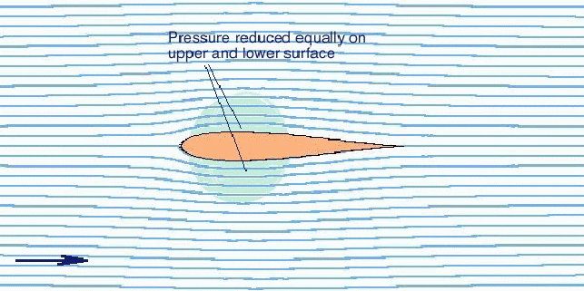
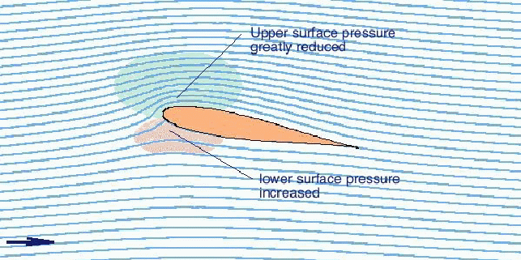
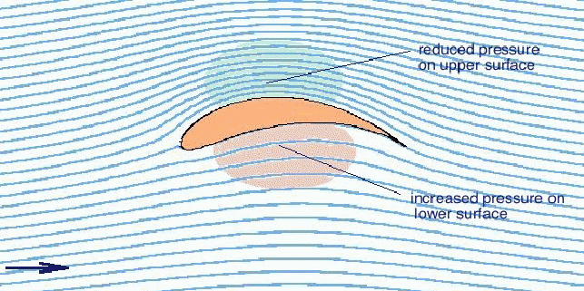
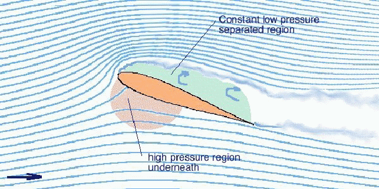
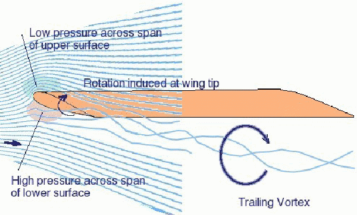
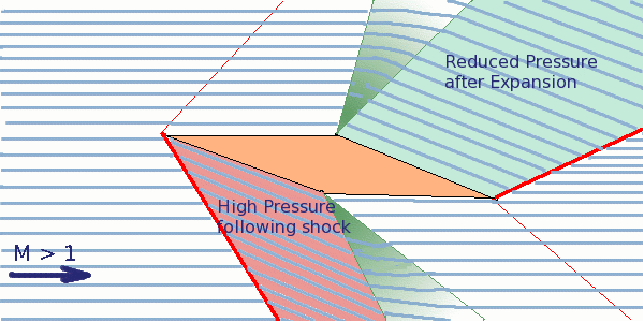
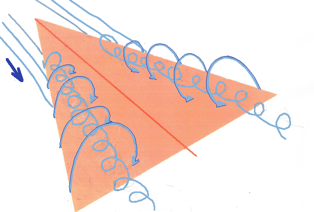

IMAGES OF LIFT
What is Circulation lift? | |
|  |
(Standard aerofoil lift) For a low speed aerofoil section, lift is generated by the pressure difference induced on the upper and lower surfaces. This can be created in two ways, either by curving or cambering the section or secondly by putting the section at an angle to the flow. A symmetric section when lined up with the flow produces a low pressure region on both sides but due to symmetry these are equal so there is no net lift force. Pressure variation can be seen where flow lines either accelerate or decelerate. The faster the flow, the narrower the streamline spacing becomes. |
Angle of Attack | |
|  | When the section is set at an angle, flow will slow and stop underneath but then accelerate rapidly around the nose over the top. As the flow is nearly incompressible these pressure field disturbances transmit their influence upstream and start moving the air stream before it gets to the section. Flow is pulled up and over the section then returned back down as it flows past the trailing edge. No acceleration occurs near the sharp trailing edge as viscous effects cause the fluid to separate uniformly from this sharp corner. The overall result is a region of very low pressure at the front and top of the aerofoil and a moderately high pressure region underneath leading to a resultant lift force. The effect adds a rotation to the air mass as it passes across the aerofoil hence the name "circulation" lift. Flow is curved up and then down again on its paths around the aerofoil. |
Camber | |
|  |
(Curved Section) If the aerofoil is curved (cambered) then the circulation effect will be produced by its shape even though the stream angle is zero. In this case, unlike the effect of change of flow angle the pressure differences will occur further back toward the centre of the section and not right up near the leading edge. The location of the centre of pressure will depend on the aerofoil shape. There will again be lift due to this pressure difference between upper and lower surface caused by forcing the air around a curved surface. If the cambered section is set at an angle of attack then the lift due to angle will be added to the lift due to camber and there will be a further increase. |
Is there a limit to the lift of a section? | |
|  | Lift will increase in proportion to the angle of attack. However, once the angle becomes too high, viscous effects come into play and cause the air flow to separate from the upper section surface rather than following the tight curves around the nose. The flow is then stalled. The lower surface pressure is similar to the unstalled case but the upper surface reverts to the constant low pressure of the separated flow region. This is not as low a pressure as was produced by attached flow so a reduction in lift of 20% to 30% occurs. The point just before stall occurs will produce the maximum lift at low angle for the section. The main problem associated with stall is not the loss of lift but the associated large increase in drag that occurs due to this new pressure balance. |
What happens at the edges of a real three dimensional wing? | |
|  | Real wings are three dimensional. Even though two dimensional section flow predominates over most of a wing, especially if it is a straight wing with high aspect ratio, the tip effects will cause some spanwise (three dimensional) flow. Near the tip the high pressure region will push air around to the low pressure upper surface. This effect combined with the freestream airflow creates a rotating flow called a tip vortex. The vortex is shed downstream with a strength that is large and proportional to the lift produced by the wing. Although the vortex is created by a localised tip effect, its length extending downstream produces significant effects on the whole flow. The vortex rotation induces a downwash in the wake and this extends back to the wing. This downwash flow induced by the vortex results in a reduction in overall lift on the wing. The size of the reduction is a function of the aspect ratio of the wing. High aspect ratio wings have only a small reduction in lift, but when the aspect ratio is reduced to less than 2 then the vortex positions start to shift and the flow becomes completely three-dimensional and vortex dominated. |
What is compression lift? | |
|  |
As the velocity of the airstream increases, air starts to be compressed as it
flows around the aerofoil. This has a noticeable influence once the flow Mach
number reaches 0.3 or above. The compressible flow behaviour becomes the
dominant influence on lift for supersonic flow. In supersonic flow no pressure
disturbances can propagate upstream so airflow direction changes can only be
rapid as the stream runs into the shock waves created by the aerofoil.
Underneath the section, shocks produce a high pressure region of compressed
air while on top expansions produce a region of lower pressure. The
differences in pressure caused by shockwave compression and expansion
systems produce the lift on the section. An alternate method of producing compression lift is to use wings in ground effect with surrounding skirts to create a high pressure region trapped beneath the vehicle. However in this case, an extra energy source is required to maintain the higher pressure in the region between ground and underside of vehicle. But at least lift can be generated without forward speed of the vehicle. |
What is vortex lift? | |
|  | On low aspect ratio wings, in particular delta planform wings, the tip vortices form from the leading edge rather than at the wing tip like conventional wings. Due to mutual interference, they are positioned above the wing rather just at the tip and downstream. This vortex pair forms a low pressure downward moving flow above the wing and allows lift to be maintained at much higher angles of attack than for conventional wings. |